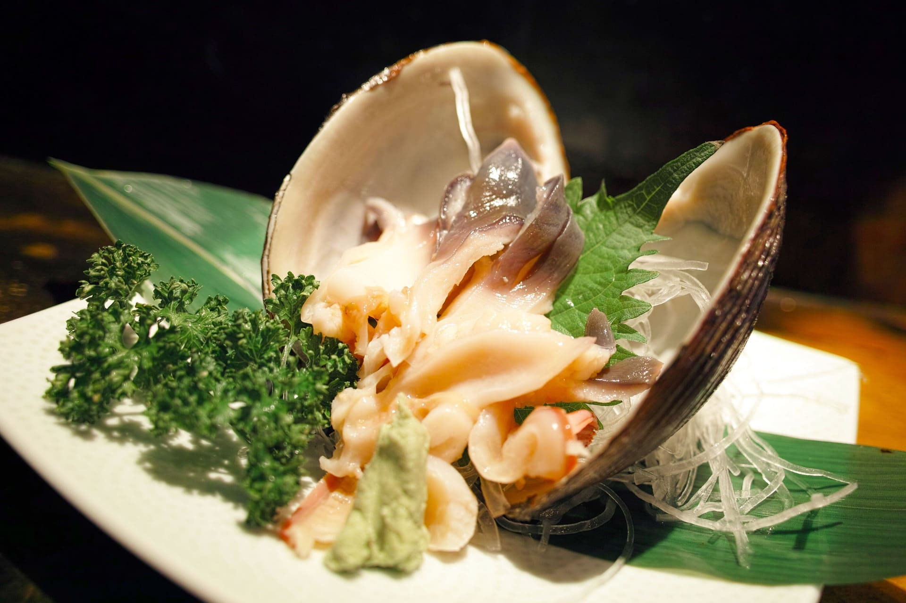

ご挨拶Greeting
毎朝、日本各地から直送される とびきり新鮮な旬の魚を使用しておりますので、 ネタの質が高く、 美味しい寿司をお召し上がりいただけます。 お客様により良いものを より美味しく召し上がっていただきたい。 その志の元、日々精進を重ねていきます。 皆様のお越しを心よりお待ちしております。
ご挨拶Greeting
Every morning, we use the freshest seasonal fish delivered directly from various regions across Japan.
As a result, the quality of our ingredients is exceptionally high, allowing us to serve delicious sushi.
We strive daily to provide our customers with the best possible sushi experience, driven by our commitment to offer better and tastier sushi.
We sincerely look forward to your visit."
私たちのこだわりOur Commitment to Quality
鮮度
Freshness
桜寿司では、 日本各地から直送される新鮮な食材を使用し、 一貫一貫に心を込めてお作りしています。 毎朝、市場にて実際に目で見て手に触れ、 一番のものだけを目利き、仕入れております。 品質と鮮度に妥協はありません。
At Sakura Sushi, we use fresh ingredients delivered directly from various regions across Japan,
crafting each piece with heartfelt care.
Every morning, we personally visit the market,
selecting only the best ingredients with our own eyes and hands.
We compromise neither on quality nor on freshness.
米
Sushi Rice
ネタの良さを引き出す米 寿司ネタに合うよう 選び抜いた国産米を使用しております。
We also use carefully selected domestic rice that perfectly complements our sushi ingredients,
bringing out the best in each piece.
技術
Technique
私たち寿司職人は 素材を最大限に活かすため 握り方にもこだわっています。
Our sushi chefs are dedicated to maximizing the potential of each ingredient,
paying meticulous attention to the way each piece is crafted.
季節の色どり、海の恵みをご堪能ください
Enjoy the seasonal colors and the blessings of the sea.
季節のメニュー
Seasonal Menu
貝のお造り
Shelfish Sashimi
季節のアラカルト
Seasonable A La Carte

季節のお椀
Seasonable Soup

手鞠寿司
Temari Sushi